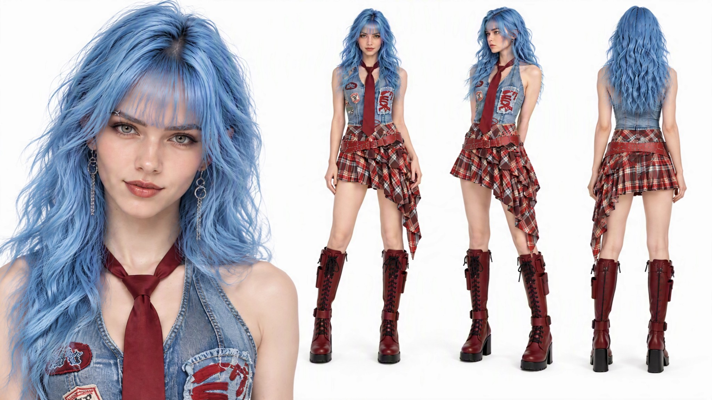

From Prompt
To Publish
Your creative direction, connected to CapCut’s image generation, video generation, and editing tools.
Describe an idea in natural language, generate content, and refine the result through conversation. Where supported, open an editable draft in CapCut for more precise adjustments.
Copy. Connect. Create.
Click Open CapCut plugin page to find the installation prompt. Copy it there, then paste it into Codex or ChatGPT Work in the desktop app and follow the authorization steps.
- 01
Open the link
Visit the CapCut plugin page above.
- 02
Copy, then paste
Copy the prompt from the CapCut page, then paste it into a desktop task and authorize the plugin.
- 03
Start creating
Begin your request with “Use CapCut to…”
How to create an AI influencer
Follow the conversation from a character brief to reference images and a finished video.
Generate two character images for me. Character 1 — Vintage Fashion Influencer Create a character reference sheet of a quirky vintage fashion influencer with a pink bob haircut, matching mustache, and a retro brown suit. Include front, side, and back views. Character 2 — Streetwear Influencer Create a realistic streetwear influencer with blue hair, a black-and-yellow baseball cap, and a black graphic T-shirt. Use a cinematic, urban-inspired style.

The two character reference sheets are shown above. Click an image to inspect the full-size reference.
Open CapCut ↗Opens the CapCut plugin page.These are the supplied character results. The streetwear styling differs from the example prompt; the supplied images are used as the references for the next stage.
Create a short MV-style video featuring these two characters, recreating the iconic choreography from the “Raindance” music video with cinematic lighting and dynamic camera movements.
The supplied final video is ready to watch. Press play to see the characters in motion, with sound.
Open CapCut ↗Opens the CapCut plugin page.Make the workflow your own
Describe each character’s appearance, hairstyle, outfit, and visual style. Then attach your generated images and describe the action, setting, lighting, and camera movement for your video.
Why This Workflow Is More Efficient
| Traditional Workflow | With the CapCut Plugin |
|---|---|
| Prepare a character image separately. | Generate the character image through the plugin workflow, if supported. |
| Write and refine video prompts manually. | Describe the desired result in natural language. |
| Switch between tools to generate and review content. | Use Codex to access the connected CapCut workflow. |
| Rewrite similar instructions for each new project. | Reuse saved instructions or Skills, where supported. |
From Prompt to Creative Result
Codex and the official CapCut plugin connect natural-language interaction with image generation, video generation, and video editing, allowing creators to work across multiple stages of the creative process through conversation.
Creative Work.
From ideation to asset generation, editing, and refinement, the connected workflow makes creation more seamless and efficient. Established workflows can also be saved and reused in future projects.
Start with CapCut ↗